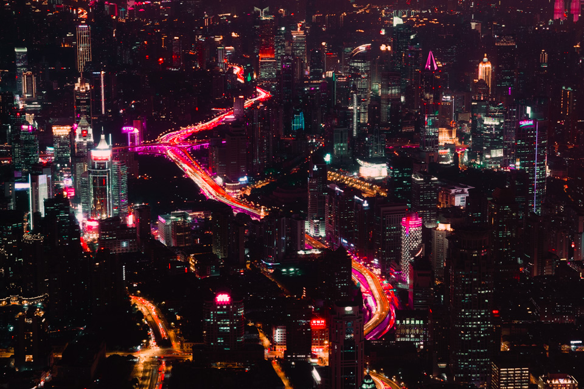

Det første bilde tro det eller ei er mitt og jeg lagde det for da jeg jobbet som en journalist for Framtida.no
Til nettsiden.
I dette bilde ser vi karakter eller viktige ting fra fem forskjellige spill.
Det andre bilde er fra en person på flickr som kaller seg selv for "The Bloodless Baron".
I dette bilde ser vi noen skyskrapere har blå og røde lys på seg.
Det tredje bilde er fra en person på flickr som kaller seg selv for Nicci Romanovsky
I dette bilde ser vi en avslappende strand.
Det fjerde bilde er fra en person på flickr som kaller seg selv for Skyseeker
I dette bilde ser vi et kirsebærtre.
Det femte bilde er fra en person på flickr som kaller seg selv for kjarrett
I dette bilde ser vi noen skyskrapere med gult lys på seg.

Det sjette bilde er fra en person på flickr som kaller seg selv for Pascal Subtil
I dette bilde ser vi Times Square i New York.
Det syvende bilde er fra en person på flickr som kaller seg selv for Peter Lindberg
I dette bilde ser vi Pokémonen som heter Munchlax som ser gjennom et vindu.
Det åttende bilde er fra personen The Bloodless Baron igjen
I dette bilde ser vi en futuristisk by sett fra ovenfra.

Det niende bilde er fra en person på flickr som kaller seg selv for Vic
I dette bilde ser vi noen kjeks som er formet som stjernene fra Mario.
Det tiende bilde er fra en person på flickr som kaller seg selv for hobbs_luton
I dette bilde ser vi en interessant versjon av spillet Wii sports.